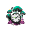
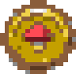
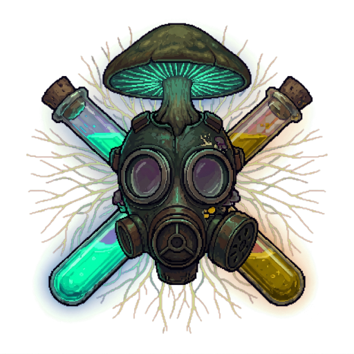

0:00
0
Споры в воздухе. Держись, сколько сможешь.
В банке 0
WASD или палец по экрану — движение. Стреляет само.
Выброс спор — пробел или кнопка справа: 30% заражения в удар по кругу.
Продержался 0:00, уровень 1
0 0
или клавиша R